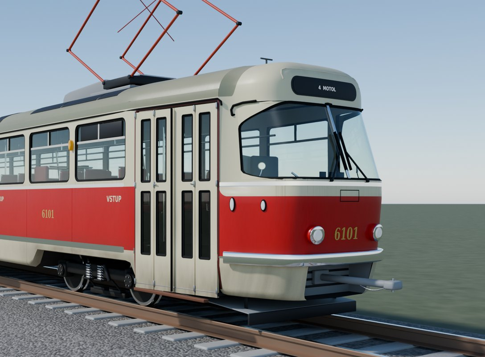
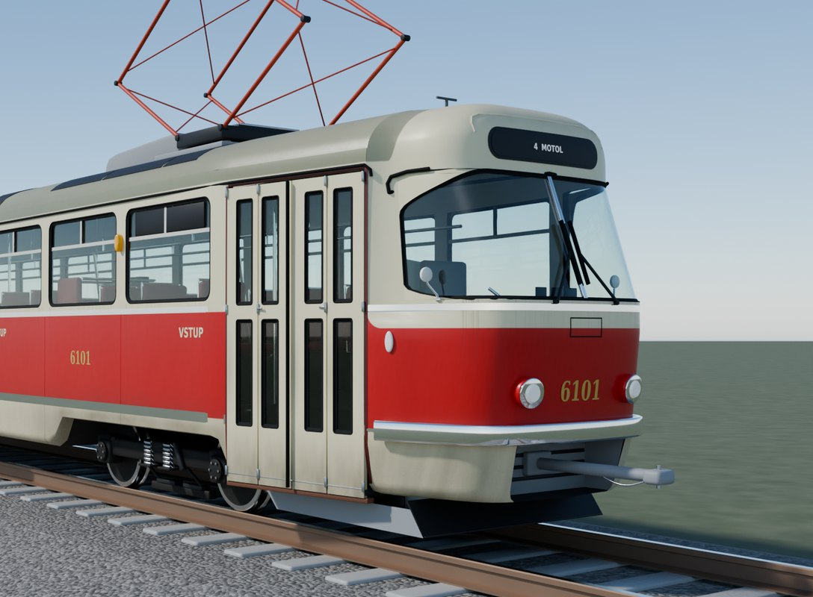

Five fixes from the marked screenshot: pantograph bracing, mirror, side marker, step plate and the plate under the front. The photo of car 6149 decides where it disagrees with the drawings; everything else is measured on flat-colour renders against the drawings, in millimetres.
Features within ±15 mm, before → after, for each view.


| Feature | Drawing | Before | Dev. | After | Dev. |
|---|---|---|---|---|---|
| Right side (door side) | |||||
| front door first pane rear edge | 4 767 | 4 768 | 1 | 4 768 | 1 |
| front door last pane front edge | 5 862 | 5 860 | -2 | 5 860 | -2 |
| front door upper panes | 4 | 4 | 0 | 4 | 0 |
| front door upper pane top | 2 416 | 2 418 | 2 | 2 418 | 2 |
| front door upper pane bottom | 1 675 | 1 684 | 9 | 1 684 | 9 |
| front door lower pane top | 1 519 | 1 520 | 1 | 1 520 | 1 |
| front door lower pane bottom | 772 | 784 | 12 | 784 | 12 |
| front end at y 2.90 | 6 454 | 6 632 | 178 | 6 632 | 178 |
| front end at y 2.60 | 6 675 | 6 680 | 5 | 6 680 | 5 |
| front end at y 2.30 | 6 663 | 6 770 | 107 | 6 770 | 107 |
| front end at y 2.00 | 6 861 | 6 912 | 51 | 6 912 | 51 |
| front end at y 1.70 | 6 968 | 7 008 | 40 | 7 008 | 40 |
| front end at y 1.45 | 6 968 | 6 996 | 28 | 6 996 | 28 |
| front end at y 1.20 | 6 938 | 6 968 | 30 | 6 968 | 30 |
| front end at y 0.95 | 6 908 | 6 938 | 30 | 6 938 | 30 |
| front end at y 0.80 | 6 962 | 6 994 | 32 | 6 994 | 32 |
| front end at y 0.65 | 6 831 | 6 868 | 37 | 6 868 | 37 |
| front end at y 0.40 | 6 771 | 6 802 | 31 | 6 802 | 31 |
| front coupler tip x | 7 614 | 7 616 | 2 | 7 616 | 2 |
| front coupler centre y | 559 | 561 | 2 | 561 | 2 |
| cab side window rear edge | 6 215 | 6 236 | 21 | 6 236 | 21 |
| cab side window front edge | 6 759 | 6 842 | 83 | 6 842 | 83 |
| cab side window top | 2 410 | 2 344 | -66 | 2 344 | -66 |
| cab side window bottom | 1 705 | 1 722 | 17 | 1 722 | 17 |
| side marker x | 6 199 | 6 202 | 3 | 6 201 | 2 |
| side marker y | 1 383 | 1 391 | 8 | 1 391 | 8 |
| side marker height | 138 | 136 | -2 | 140 | 2 |
| mirror head x Model at 510 mm behind the front end, your measured value. This drawing draws the body ~64 mm short, so its front-end readings all run 20-50 mm short. | 6 457 | – | – | 6 490 | 33 |
| mirror head y | 1 821 | – | – | 1 826 | 5 |
| mirror head height | 102 | – | – | 96 | -6 |
| step plate top at x 5.2 | 275 | 288 | 13 | 280 | 5 |
| step plate bottom at x 5.2 | 102 | 276 | 174 | 110 | 8 |
| step plate top at x 5.8 | 275 | 240 | -35 | 280 | 5 |
| step plate bottom at x 5.8 | 102 | 228 | 126 | 110 | 8 |
| step plate rear end at y 0.27 | 4 653 | 5 286 | 633 | 4 658 | 5 |
| step plate front end at y 0.27 | 6 292 | 5 436 | -856 | 6 294 | 2 |
| step plate rear end at y 0.17 | 4 749 | – | – | 4 756 | 7 |
| step plate front end at y 0.17 | 6 376 | – | – | 6 366 | -10 |
| light pixels under the front door at rail level Light or orange pixels under the front door near the rail. 0 = none. | 0 | 0 | 0 | 0 | 0 |
| Front | |||||
| windscreen left edge | -831 | -890 | -59 | -890 | -59 |
| windscreen right edge | 945 | 992 | 47 | 992 | 47 |
| headlight L outer width | 217 | 198 | -19 | 198 | -19 |
| headlight L centre zv | -499 | -507 | -8 | -507 | -8 |
| headlight L centre y | 1 071 | 1 066 | -5 | 1 066 | -5 |
| headlight L lens diameter | 118 | 124 | 6 | 124 | 6 |
| headlight R outer width | 214 | 198 | -16 | 198 | -16 |
| headlight R centre zv | 502 | 506 | 4 | 506 | 4 |
| headlight R centre y | 1 076 | 1 066 | -10 | 1 066 | -10 |
| headlight R lens diameter | 118 | 123 | 5 | 123 | 5 |
| position lamp L centre zv Removed: the photo of 6149 shows no lamps on the front face, only the side markers. | -870 | -883 | -13 | – | – |
| position lamp L centre y As above. | 1 374 | 1 380 | 6 | – | – |
| position lamp L height As above. | 101 | 101 | 0 | – | – |
| position lamp R centre zv As above. | 868 | 882 | 14 | – | – |
| position lamp R centre y As above. | 1 387 | 1 380 | -7 | – | – |
| position lamp R height As above. | 101 | 99 | -2 | – | – |
| mirror head L centre zv Photo wins: the head stands outside, at the lower corner of the windscreen. The front drawing draws it behind the glass, ~0.8 m out. | -773 | – | – | -947 | -174 |
| mirror head L centre y | 1 816 | – | – | 1 816 | 0 |
| mirror head L diameter | 110 | – | – | 114 | 4 |
| mirror head R centre zv As above. | 851 | – | – | 947 | 96 |
| mirror head R centre y | 1 816 | – | – | 1 817 | 1 |
| mirror head R diameter | 110 | – | – | 112 | 2 |
| lobe L inner edge | -520 | -522 | -2 | -522 | -2 |
| lobe R inner edge | 530 | 522 | -8 | 522 | -8 |
| lobe bottom at zv -0.70 | 342 | 331 | -11 | 335 | -7 |
| lobe bottom at zv +0.70 | 348 | 331 | -17 | 335 | -13 |
| guard plate top at zv -0.65 | 345 | 355 | 10 | 355 | 10 |
| guard plate bottom at zv -0.65 Photo wins: the plate no longer comes down to the track. Its bottom is at 110 mm (side drawing 102 mm, your value 140 mm); the front drawing draws it at 52 mm. | 52 | 60 | 8 | 110 | 58 |
| guard plate top at zv +0.65 | 348 | 355 | 7 | 355 | 7 |
| guard plate bottom at zv +0.65 As above. | 58 | 60 | 2 | 110 | 52 |
| guard plate left | -902 | -900 | 2 | -896 | 6 |
| guard plate right | 909 | 900 | -9 | 896 | -13 |
| Left side | |||||
| pantograph platform rear end As above. | 2 487 | 2 484 | -3 | 2 546 | 59 |
| pantograph platform front end As above. | 3 611 | 3 600 | -11 | 3 662 | 51 |
| pantograph rear knee x As above. | 1 616 | 1 610 | -6 | 1 672 | 56 |
| pantograph front knee x As above. | 4 673 | 4 666 | -7 | 4 728 | 55 |
| pantograph centre x Moved onto the front bogie pivot, 3,800 mm behind the front end (labelled). The left drawing draws it 55 mm further back, so the five lengthwise pantograph readings there move out of tolerance. | 3 145 | 3 138 | -7 | 3 200 | 55 |
| pantograph rear knee y | 3 915 | 3 921 | 6 | 3 921 | 6 |
| pantograph front knee y | 3 915 | 3 921 | 6 | 3 922 | 7 |
| pantograph: pixels inside the diamond on the centre line Seen from the side the diamond is now open: the cross braces run across the car in the planes of the arms. 0 = open. | 0 | 2 304 | 2 304 | 0 | 0 |
| side marker x | 6 203 | 6 202 | -1 | 6 201 | -2 |
| side marker y | 1 386 | 1 396 | 10 | 1 396 | 10 |